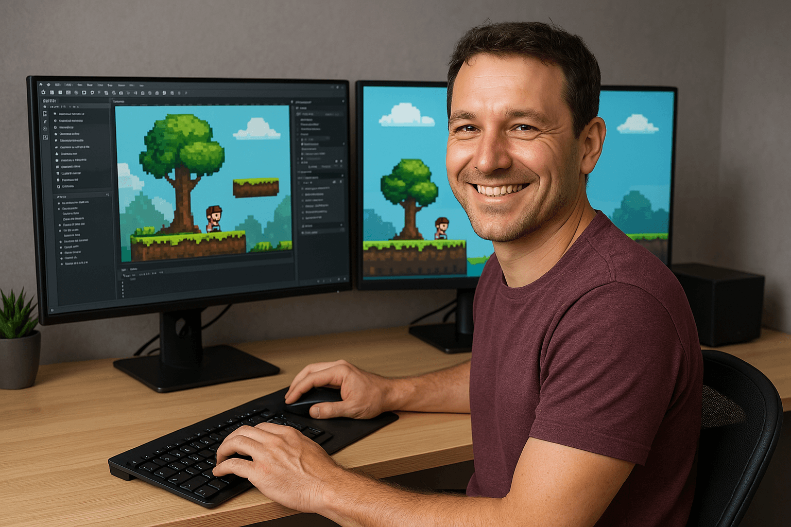

Игорь — талантливый геймдизайнер и разработчик игр с многолетним опытом в индустрии. Он сочетает в себе
творческое мышление и техническую подкованность, что позволяет ему создавать увлекательные и продуманные игровые
миры. Его ключевые характеристики — усидчивость, любознательность и страсть к инновациям.
Специализация:
Разработка нарративных и сюжетных игр (RPG, квесты, визуальные новеллы)
Геймдизайн механик и балансировка игрового процесса
Программирование на C# (Unity) и Python (для инструментов разработки).
Профессиональные качества: Умение
работать в команде и слушать feedback Глубокое понимание игровых тенденций и психологии игроков Опыт в
создании как инди-проектов, так и коммерческих продуктов.
Игорь постоянно учится новому, экспериментирует
с
жанрами и стремится делать игры, которые запоминаются.